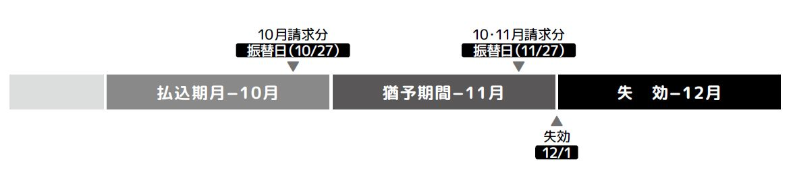
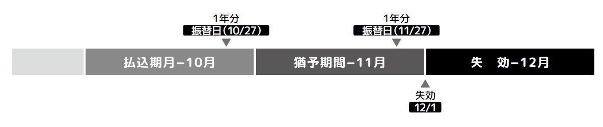

IMPORTANT MATTERS重要事項説明書
「重要事項説明書」には、保険契約のお申込に際して特に注意をしていただきたい事項を記載しています。 お申込の前には必ずご一読いただき、内容を十分にご理解の上お申込ください。 なお、支払事由や制限事項に関する詳細等の契約内容にかかわる取決めは、約款をご確認ください。
契約概要
「契約概要」には、商品内容等を理解していただくために必要な情報をまとめて記載しています。 お申込の際は、「注意喚起情報」とあわせてお読みください。
１．商品のしくみ
この保険は、被保険者の方が死亡された場合に、所定の死亡保険金を受け取ることができる保険です。 掛捨型の保険で、貯蓄性（満期保険金など）はありません。
２．新規でお申込みいただける方(被保険者)の範囲
責任開始日において満50歳以上満80歳以下である方。
３．保障の内容
- (１) 保険金をお支払する場合
名称 死亡保険金 支払事由
（保険金を支払う場合をいいます。以下同じ。）被保険者が保険期間中に死亡したとき 支払額 保険証券記載の保険金額 受取人 保険金受取人 免責事由
（保険金を支払わない場合をいいます。以下同じ。）以下のいずれかにより、被保険者が死亡したとき - ① 責任開始期の属する日からその日を含めて３年以内の被保険者の自殺
- ② 保険契約者の故意
- ③ 保険金受取人の故意
※ 被保険者の生死が不明な場合、法定死亡（失踪宣告、戸籍法上の認定死亡による除籍）、その他死亡したものと会社が認めたときは、保険金を支払います。
※ 保険金が支払われた場合の保険契約の消滅日は、被保険者が死亡した日とします。
※ 被保険者が、地震、噴火、津波、戦争その他の変乱によって死亡した場合に、それによって死亡した被保険者の数の増加が この保険の計算の基礎に重大な影響を及ぼすと認められるときは、会社は、その程度に応じ、保険金を削減して支払うことがあります。
- (２) 保険金をお支払いしない主な場合
- ① 保険契約が告知義務違反により解除となった場合
- ② 保険金を詐取する目的で事故を起こしたときや、保険契約者、被保険者または 保険金受取人が暴力団関係者その他の反社会的勢力に該当すると認められたときなど、 重大事由により保険契約が解除となった場合
- ③ 保険契約について詐欺の行為があって取り消された場合や、保険金の不法取得目的があって保険契約が無効になった場合
- ④ 保険料のお払込みがなく、保険契約が失効した場合
- ⑤ 免責事由に該当した場合
- ア．責任開始期の属する日からその日を含めて３年以内の被保険者の自殺
- イ．保険契約者の故意
- ウ．保険金受取人の故意
４．保険期間と更新
- (１) 保険期間は、責任開始日から起算して１年間です。
- (２) 保険契約者が保険期間満了日の２週間前までに会社所定の書面にてご契約を更新しない旨を通知しない限りは、 保険契約は、更新され継続するものとします。ただし、更新後の保険期間の満了日の翌日における被保険者の年齢が満100歳をこえる場合、更新できません。
- (３) 更新後の保険期間は、更新日より１年間となります。ただし、以下の場合には保険料その他の契約内容の変更を行うことがあります。
- ① 普通保険約款の規定により、更新時の被保険者の満年齢に応じて保険料が変更になる場合
- ② 保険契約の計算の基礎に重大な影響を及ぼす状況の変更が発生し、保険期間中に保険料の増額または保険金額の減額を行う場合
- (４) 更新時に、会社がこの保険契約の締結を取り扱っていないとき、またはこの保険が不採算であったときは、この保険契約は更新されません。
５．保険料について
保険料については、パンフレットに記載の保険料表をご覧ください。
- (１) お申込み時の保険料は、責任開始日における満年齢、性別、払込回数によって決まります。 更新後の保険料は更新日における満年齢、払込回数によって決まり、ご契約更新の際に年齢群団が変わる場合に変動します。
- (２) 払込方法（回数）は、「月払」か「年払」のいずれかをお選びください。
- (３) 払込方法（経路）は、口座振替となります。月払保険料は払込期月中の毎月の振替日に、 年払保険料は責任開始日または更新日の属する月の振替日に、保険契約者の指定口座より、口座振替（自動振替）によりお払い込みいただきます。
- (４) この保険契約の保険料の払込期間は1年間となります。
- (５) 保険契約の計算の基礎に著しく影響を及ぼす状況の変化が発生したときは、会社の定めにより保険期間中に、 保険契約の保険料の増額または保険金額の減額を行うことがあります。
6．配当金・満期保険金・解約返戻金
- (１) この保険には、契約者配当金はありません。
- (２) この保険は掛捨型で、満期保険金はありません。
- (３) 保険料払込方法（回数）が「月払」の場合は、解約返戻金はありません。 保険料払込方法（回数）が「年払」の場合は、保険契約の年単位の契約応当日からの経過月数 （以下「経過月数」といいます。） に応じて計算された金額を解約返戻金として保険契約者に支払います。 ただし、１か月に満たない経過月の端数はこれを切り上げます。
注意喚起情報
「注意喚起情報」には、ご契約に際して特にご注意をいただきたい情報をまとめて記載しております。 お申込の際は、「契約概要」とあわせてお読みください。
１．告知義務について
- (１) 保険契約者または被保険者には、ご契約時に、危険選択に関する重要な事項のうち、 会社所定の書面等で質問した事項につき、その書面等により告知していただく義務（告知義務）があります。 故意または重大な過失によって告知書などに事実と違う記載をされた場合、または事実を告知されなかった場合は、 「告知義務違反」として会社はご契約を解除することがあります。ご契約を解除した場合には、 保険金の支払事由が発生していても、保険金をお支払いできないことがあります。被保険者の告知事項については、十分ご注意ください。
- (２) 加入時に詐欺行為や保険金を不法に取得する目的があったときは、責任開始日からの年数を問わず、保険金をお支払いしません。 また、この場合すでにお払い込みいただいた保険料は、お返しいたしません。
- (３) 会社の募集人には告知受領権がありません。会社の募集人に口頭でお話しされても告知していただいたことにはなりません。 必ず告知書等で告知いただきますようお願いいたします。また、告知事項を審査し、その内容によってはご契約をお断りすることがあります。
２．保険契約のお申込みの撤回等（クーリング・オフ）について
この保険は保険期間が１年以下であるため、クーリング・オフの対象外です。
３．契約日・責任開始日について
お申込みいただいたご契約を、申込締切日（毎月15日）までに会社が承諾した場合は、 申込締切日の翌月の1日から保障が開始されます。申込書などに記入漏れがあった場合や、 会社がお申込みに関する確認に時間を要する場合などで、お申込みを承諾した日が１５日を過ぎた場合は、 責任開始日が順延されます。初年度の保険契約において会社の保険契約上の責任が開始される日を責任開始日といいます。 契約日は責任開始日とし、保険期間、保険料払込期間および契約年齢は、その日を基準として計算します。
４．保険料のお払込みの猶予期間とご契約の失効
- (１) 保険料お払込みの猶予期間は、払込期月の翌月初日から末日までです。猶予期間中に保険料のお払込みがない場合は、
保険契約は猶予期間満了日の翌日から失効します。
◎ 保険料払込の猶予期間と保険料未払いによる失効例- ① 月払の場合
払込期月までに払い込まれるべき保険料のお払込みがなく、その翌月の猶予期間満了日までに翌月分の保険料を合算した2か月分の保険料が払い込まれない場合 - ②年払の場合
猶予期間満了日までに、払込期月に払い込まれるべき保険料のお払込みがない場合 - 
- ① 月払の場合
- (２) 保険契約が失効した場合、保険契約の復活の取扱いはありません。
５．セーフティネットについて
会社は、少額短期保険業者であり、保険業法上、保険契約者保護機構の加入対象となっておりませんので、 同機構による資金援助等の措置はありません。また、この保険契約は、保険業法上、破綻会社に係る保険契約者等の 保護措置による補償対象契約には該当しません。ただし、破綻した場合の損失の補填や、資金の不正利用の防止等の観点から、 少額短期保険業者登録時および毎決算期に必要に応じて供託金を法務局に差し入れております。
６．保険金のご請求の手続きについて
- (１) 保険金の支払事由が発生した場合は、保険金請求窓口まで、すみやかにご連絡ください。
- (２) 保険金、解約返戻金その他の支払を請求する権利は、これらを行使することができる時から３年間これを行使しないときは、時効により消滅します。
- (３) 保険金のご請求に際しては、保険金請求書、会社所定の診断書等、会社の指定する書類をご提出いただくことが必要となります。
詳しくは、保険金ご請求時に、保険金請求受付窓口にご確認ください。
７．少額短期保険業者の制限について
少額短期保険業者には、原則として以下の制限があります。
- (１) 少額短期保険業者は保険期間が１年以内であって、死亡保険の場合は、保険金額が300万円以下の保険のみの引受けをおこなうもの
- (２) 少額短期保険業者は保険期間が１年以内であって、いわゆる第三分野の医療保険の場合は、保険金額が80万円以下の保険のみの引受けをおこなうもの
- (３) １人の被保険者について引き受けるすべての保険の保険金額の合計額は、1,000万円以下とすること
- (４) １人の保険契約者について引き受ける医療保険の保険金額の合計は、原則8,000万円以下とすること
- (５) １人の保険契約者について引き受ける死亡保険の保険金額の合計は、原則３億円以下とすること
８．その他ご注意いただきたい事項
【 申込書・告知書のご記入について 】
(１) 申込書は、原則として保険契約者・被保険者それぞれがご自身でご記入ください。
(２) 告知書は、被保険者の健康状態や傷病歴などをお知らせいただくものです。被保険者ご自身が正確にご記入くださるようお願いいたします。
【 少額短期保険募集人の権限 】
会社の募集人は、お客様と会社の保険契約締結の媒介を行う者で、保険契約締結の代理権はありません。 したがいまして、ご契約は会社がご契約のお申込みを承諾したときに有効に成立いたします。
【 ご契約の解約に際しての不利益事項 】
ご契約中の保険契約を解約すると、新たに保険契約をお申込みいただいたとしても、 被保険者の健康状態などによってはお引き受けできないことがあるなど、お客様にとって不利益になることがあります。
【 生命保険料控除の対象外となることについて 】
この保険では、保険契約者が負担する保険料は、所得税法上、所得控除（生命保険料控除） の対象となっておりませんので、 あらかじめご了承ください。
【 払込方法の変更の取扱い 】
払込方法（回数）の変更（月払または年払）は更新時にのみ行うことができます。 保険期間満了日までに所定の用紙でお申込みください。
９．お問合せ・苦情・相談窓口
【 ご契約に関するお問合せ 】
会社の保険のお手続き（ご契約内容の変更等）やご契約に関する照会等については、下記ご相談・お問合せ窓口へご連絡ください。 なお、ご契約お申込みの手続きに関しては、会社の取扱者／代理店までご相談をお願いいたします。
| コールセンター TEL 03-6824-4768 ［受付時間 ］平日10:00～16:00 （土・日・祝・年末年始を除く） |
【 苦情のお申し出およびご意見・ご相談 】
| コールセンター TEL 03-6824-4768 ［受付時間 ］平日10:00～16:00 （土・日・祝・年末年始を除く） |
10．指定紛争解決機関について
会社は、指定少額短期保険業務紛争解決機関である一般社団法人日本少額短期保険協会との間で、 少額短期保険に関する苦情処理手続き・紛争解決手続き等の実施のための「手続実施基本契約」を締結しております。 お客様と会社との間で問題を解決できない場合には、一般社団法人日本少額短期保険協会に解決の申立てを行うことができます。 苦情を受けてから1か月を経過した後も未解決の案件については、弁護士・学識経験者・消費者相談員によって構成される「裁定委員会」が 「少額短期ほけん相談室」内に設置され、和解の仲介・裁定（和解案の作成）を行います。
|
一般社団法人 日本少額短期保険協会 「少額短期ほけん相談室」 〒104-0032 東京都中央区八丁堀3-12-8 TEL 0120-82-1144（フリーダイヤル） FAX 03-3297-0755 ［ 受付時間 ］ 平日 9:00 ～ 12:00、13:00 ～ 17:00 （土日祝日および年末年始休業期間を除く） https://www.shougakutanki.jp/general/ consumer/consult.html |
11．支払時情報交換制度について
会社は、一般社団法人日本少額短期保険協会、少額短期保険業者とともに保険金等のお支払い、または保険契約の解除、取消し、
もしくは無効の判断の参考とすることを目的として、保険契約に関する所定の情報を相互照会しております。
※「支払時情報交換制度」に参加している各少額短期保険業者等の社名につきましては、 一般社団法人 日本少額短期保険協会ホームページをご覧ください。
個人情報の取扱いについて
当社は、お客様の個人情報保護の重要性に鑑み、個人情報保護に関する法律、その他の諸法令等を遵守すべく、 従業者等に対する教育・指導を徹底し、個人情報を適正に取扱い、安全性・正確性・機密性の確保に努めてまいります。
１．個人情報の利用目的
当社は、お客様の個人情報を、次の目的の範囲内で利用させていただきます。なお、この利用目的の範囲を超えて取扱う場合、 およびお客様の個人情報を第三者へ提供する場合は、原則として書面によりお客様ご本人の同意をいただいたうえで行います。
- (１) 各種保険契約のお引受け・ご継続・維持管理
- (２) 保険金等のお支払い
- (３) 当社・関連会社・提携会社の各種商品やサービスのご案内・提供・維持管理
- (４) 保険契約の締結、再保険契約に基づく通知、再保険金の請求
- (５) 当社業務に関する情報提供・運営管理、商品・サービスの充実
- (６) 当社が運営するサービスのための提携事業者に対する個人情報の提供
- (７) その他保険事業に関連・付随する業務
なお、上記目的の範囲内にかかわらず、番号法で定める個人番号を含む個人情報（特定個人情報）は、 法令で明記された目的にのみ利用するものとし、お客様ご本人の同意があっても、それ以外の目的には利用いたしません。
２．個人情報の取得
当社は、上記利用目的に必要な範囲内で適法・適切な手段により個人情報（氏名・生年月日・住所・性別・電話番号・職業・健康状態等）を取得します。 主な取得方法としては、保険契約申込書等による入手や、各種商品・サービスに関する資料をご請求いただいた際に、 電話その他通信媒体等を通じて入手する方法があります。
３．個人情報の管理
当社は、お客様の個人情報の管理にあたっては正確かつ最新の内容に保つよう努めます。また、個人情報への不正なアクセス、および個人情報の紛失、 盗難、改ざん、漏洩等の防止のため、各種安全管理措置を講じるとともに個人情報の取扱いに関する方針や規定等を継続的に見直し、必要に応じて適宜改善を行います。
４．機微（センシティブ）情報の取扱い
当社は、適切な業務運営を確保するために、お客様の同意に基づき業務遂行上必要な範囲で、お客様の健康状態・身体の障害状況、 過去の病歴等の機微（センシティブ）情報を取得しますが、業務上必要と認められる目的以外のためには利用いたしません。
５．個人情報の外部への提供
当社は、次の場合を除いて、保有するお客様の個人情報を外部へ提供しません。
- (１) お客様の同意を得ている場合
- (２) 法令に基づく場合
- (３) お客様または公共の利益のために必要であると考えられる場合
- (４) 上記利用目的の達成に必要な範囲内において、保険代理店を含む業務委託先等に提供する場合
- (５) 保険者の健全な運営に必要であると考えられる場合
６．個人情報の開示・訂正等
当社は、お客様から個人情報の開示・訂正等のご請求があった場合は、業務の適正な実施に著しい支障をきたす等の特別な理由がない限り、 お客様ご本人であることの確認を行ったうえで、適切に対応させていただきます。
７．委託先の監督
当社は、お預かりした個人情報の処理を利用目的の範囲内で第三者に委託する場合があります。これらの第三者は、 十分な個人情報のセキュリティー水準にあることを確認のうえ選定し、契約等を通じて必要かつ適切な監督を行います。